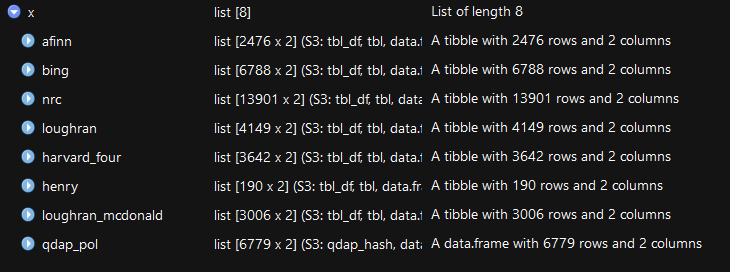
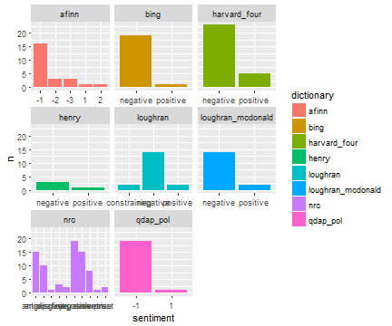
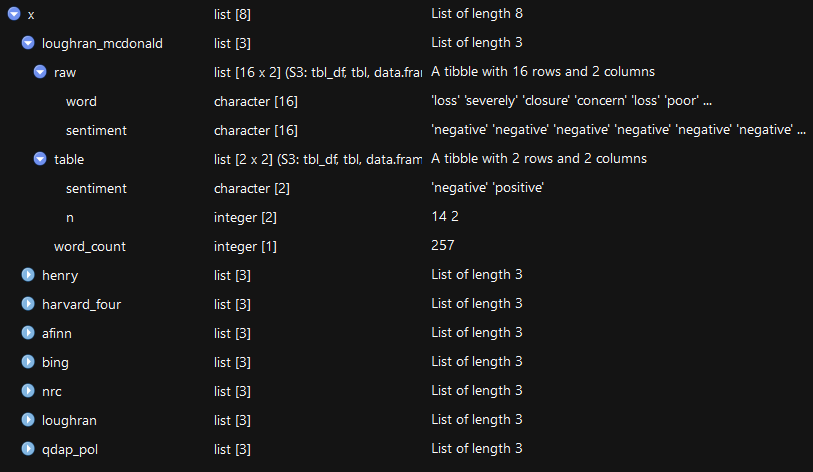
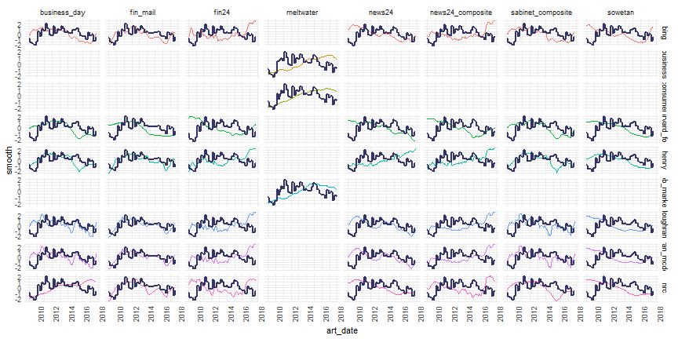
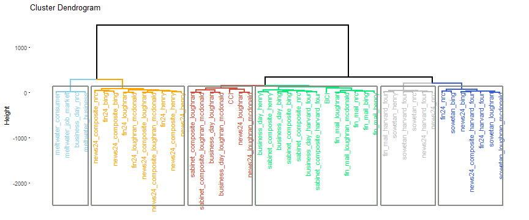
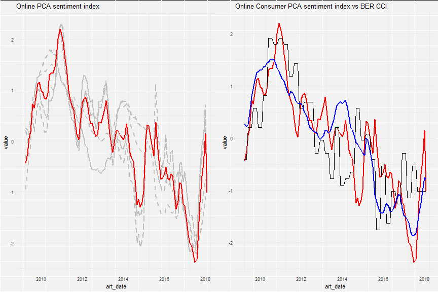
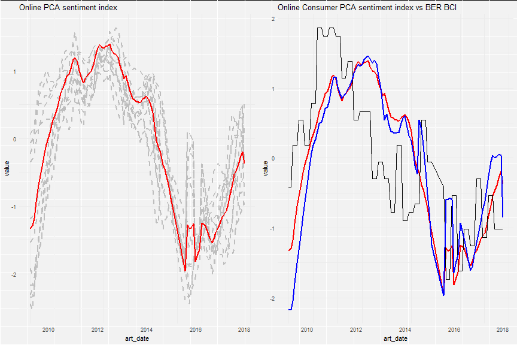

Listening closely to the news
Hanjo Odendaal
PhD Candidate
Research question
Busy gauging the feasibility of constructing online sentiment indexes using large amounts of text data and sentiment analysis
Advantages:
- Surveys can be expensive to conduct
- Large coverage of topics and population
- High frequency
Overview and sentiment paradigms
Animal Spirits
Although the mechanism through which consumer sentiment affects the general economy is still a continuing debate, two primary mechanism have been nominated. The first and foremost being an innate inability to capture reactivity of economic agents in times of uncertainty:
“Most, probably, of our decisions to do something positive, the full consequences of which will be drawn out over many days to come, can only be taken as the result of animal spirits – a spontaneous urge to action rather than inaction, and not as the outcome of a weighted average of quantitative benefits multiplied by quantitative probabilities.” - Keynes (1937).
Thought experiment where an unexpected change in the business cycle could occur purely due to the 'gut', or sentiment outlook, of economic agents reacting out of subjective foresight (heard of irrational exuberance?)
Informational contagion
This states that the contagion effect of informational news about the future state of the economy can already be internalised by economic agents, while not yet being captured in hard statistics.
- Beaudry and Portier (2014) and Barsky and Sims (2012) argue that only a limited amount of unexpected business cycle fluctuations can be attributed towards ‘animal spirits’; stating that uncaptured fundamental news is the primary channel by which the relationship of sentiment and subsequent economic activity exists

Significance of consumer confidence
For both the schools of thought, 'informational contagion' or 'animal spirits', the consensus remains the same
- Consumer sentiment and economic activity have a strong correlation and it is thus useful to incorporate sentiment into any model that wishes to forecast the future state of the economy.
- The why behind the interaction is still under debate and remains open for discussion.
Our main hypothesis sides with informational contagion. The media is a highly important input when trying to understand how economic agents form their expectation about the future and thereby shape economic outcomes
Current literature on the topic
P. J. Daas and Puts (2014)
- Their approach considered the construction of a Dutch social media sentiment index (SMI) derived from Facebook, Twitter and various other online data sources. The finding of the paper concluded that a strong association exists between consumer confidence and the sentiment displayed by public Facebook messages.
Brakel et al. (2017)
- Investigates the Dutch SMI by using a multivariate structural time series approach to estimate whether the inclusion of social media in the production of Dutch administrative statistics improve their accuracy
Fraiberger (2016)
- Construct a sentiment index from the full corpus of economic news articles, produced by Reuters, across 12 countries over a 25 year period. The paper found that the constructed index not only tracked GDP at a country level, but contained information on future GDP growth which was not captured by consensus forecasts
Data
Data Sources
To construct an economic news sentiment index, we collected data from three different sources:
- Meltwater
- Sabinet
- News24
The analysis restricts itself to the period February 2009 to October 2017 as all data-sets have information for this time frame
In total we analysed around 700k articles for this project
Some data examples (Cont.)

Construction of current confidence measures
BER Confidence indexes
The concept of consumer confidence originated in the mid 1940s with George Katona at the University of Michigan
- Gain insight into the prevailing economic climate
- Quantitative way of incorporating consumer expectations into spending and savings models
In South Africa, a consumer confidence survey is conducted on a quarterly basis by the Bureau of Economic Research of South Africa (BER)
- The history of the index dates back to 1975 when the index solely consisted out of the white population group, with black and other racial groups being included in the survey in 1982 and 1994 respectively (Kershoff, 2000).
- Survey result is the outcome of an area-stratified probability sample of 2500 households across South Africa
- Coverage of 92% of the urban adult population and 53% of the total adult population
Consumer Confidence index construction
The consumer confidence questions consists out of the following:
- How do you expect the general economic position in South Africa to develop during the next 12 months? Will it improve considerably, improve slightly, deteriorate slightly, deteriorate considerably or don’t know?
- How do you expect the financial position in your household to develop in the next 12 months? Will it improve considerably, improve slightly, deteriorate slightly, deteriorate considerably or don’t know?
- What is your opinion of the suitability of the present time for the purchase of domestic appliances such as furniture, washing machines, refrigerators etc. Do you think that for people in general it is the right time, neither a good nor a bad time or the wrong time?
Index constructed as a normalised sum of relative scores. Percentage of respondents expecting an improvement / good time less the percentage expecting a deterioration / bad time
Business Confidence index construction
The BER also conducts research on business confidence (BCI) in South Africa. Over the years, the BER has isolated one question that it uses to construct its composite business confidence index:
- Do you find prevailing business conditions satisfactory or unsatisfactory?
Introducing text methods to construct sentiment indexes
Sentiment through textual analysis
Sentiment analysis forms part of a larger field called computational linguistics. A body of text can be typically be characterised by examining two facets within the text:
- The degree to which the text exhibits emotion compared to a neutral stance
- The degree to which a certain emotion is deemed to be dominant in the writing
Dimensions is known as the valence and arousal of a body of text. To quantify the sentiment of a body of text, generally one of two (or a combination of) approaches are followed:
- Bag-of-words
- NLP
Sentiment through textual analysis (Cont.)
A dictionary "bag-of-words" approach to sentiment mining is widely used. Our bag-of-words framework was adjusted from tidytext::get_sentiment() as we felt it restrictive. We followed a more functional approach
## function(lexicon = c("afinn", "bing",
## "nrc", "loughran",
## "loughran_mcdonald", "henry",
## "harvard_four", "qdap_pol")) {
##
## data(list = "news_dict",
## package = "NewsR",
## envir = environment())
##
##
## news_dict[[lexicon]]
## }
Sentiment through textual analysis (Cont.)
Output from NewsR::get_setiments

Sentiment through textual analysis (Cont.)
We start off by denoting the total articles for a given data-set to be \(N^a_i\) where \(i \in \{Sources\}\) , while the total period over which the analysis will be conducted will be represented by \(T^d\) = {2009-02-01:2017-09-31}
- Purge all stopwords - the, and, a and so forth
- Remove all editorial pieces with less than 150 words after stopword removal
- Did not stem words due to dictionaries
Sentiment through textual analysis (Cont.)
To conduct all the cleaning steps, we created two custom functions:
analyse_article(pdf_file) %>% article_to_text(., lexicon = "all", plot = T)

Sentiment through textual analysis (Cont.)
Output from NewsR::analyse_article

Sentiment through textual analysis (Cont.)
Doing a simple word count that consists out of the positive and negative words. Using these statistics, we normalise the count so that they reflect the relative fraction of positive and negative words within an article:
\[ Pos_{i, t, n^a} = \frac{PositiveWords}{PositiveWords + NegativeWords} \\ Neg_{i, t, n^a} = \frac{NegativeWords}{PositiveWords + NegativeWords} \]
The polarity of the article is derived from the score.
\[ S_{i, t, n^a} = Pos_{i, t, n^a} - Neg_{i, t, n^a}\\ \] If the score of the article is greater than zero, then the overall sentiment for the article is deemed to be positive, the same can be said for a negative sentiment score.
Sentiment through textual analysis (Cont.)
The index is constructed as the net balance of positive and negative articles within a month. This method of constructing an index should be familiar, as it is the same method the University of Michigan uses to construct their well known consumer confidence index
\[ \mathcal{I}_{t} = \frac{PositiveArticles - NegativeArticles}{PositiveArticles + NegativeArticles} \]
- Using the same method, we create six different indexes for each of our raw text data-sets with the aim to control for the implications of different external dictionaries
- The final total of indexes under evaluation amounts to 45 excluding the reference indexes
- All indexes are finally smoothed using a Kalman Filter
But how do we analyse this large amount of data?!
Analysis
Comparison between Online Sentiment Index and CCI

Comparison between Online Sentiment Index and BCI

How we identify candidate series
The analysis section of the paper aims to identify the best confidence candidates that mimic's the BER's indicators from the plethora of indexes created in the previous section.
- To accomplish this, we turn to the field of time series clustering methods. The aim is to sub-divide the large sample set, through clustering, into smaller homogeneous buckets to identify which of the indexes created resemble the lowest dissimilarity with the BER's consumer confidence index as well as the business confidence index
- Time series clustering is an active research area with applications of the techniques being seen in literature encompassing a wide range of fields. Although the technique is gaining traction within other fields, the technique is still under utilised within the field of economics
- The steps in applying the analysis is two-fold
- Identify an appropriate dissimilarity matrix between the indexes created, the CCI and the BCI
- Use hierarchical clustering to construct clusters which consists out of all the indexes
Choice of dissimilarity measure
Decide to use a non-model based dissimilarity measure, called Dynamic Time Warping. Dynamic time warping allows for the recognition of similar shapes between time series, even in the presence of signal transformation such as shifting or scaling. A toy example of how dynamic time warping creates a mapping between time series can be seen here:

Dissimilarity matrix result

Thanks Andrew!
Clustering
Hierarchical clustering has two paradigms when approaching the clustering problem, agglomerative and divise. To conduct the clustering we use a commonly know hierarchical clustering method from @R_prog, hclust which is an agglomerative algorithm.
- The algorithm starts by assigning each observation to its own cluster
- Next it computes the similarity between each of the clusters and joining those who are most similar
This procedure is repeated until a final cluster is formed in a tree-like fashion.
- Height of the tree at each node is proportional to the value of the inter-group dissimilarity between its daughter nodes
This structure is more commonly known as a dendogram
Clustering: Linkage criteria
A linkage criterion is needed to act as a function of the pairwise distances of observations in the dissimilarity matrix provided.
- We used
Ward's distance. - It can be thought of as an Anova test as clusters merge. Thus optimising within and between cluster variance
Let \(A=\{a_1,\ldots, a_{n_a}\}\) and \(B=\{b_1,\ldots, b_{n_b}\}\) consist out of observations in \(\mathbb{R}^d\). Define the between-within, or \(e\)-distance \(e(A,B)\), between \(A\) and \(B\) as:
\[ e(A, B) = \frac{n_An_B}{n_A+n_B}\bigg(\frac{2}{n_An_B}\sum_{i=1}^{n_A} \sum_{j=1}^{n_B} d(a_i,b_j) \\ - \frac{1}{n_A^2}\sum_{i=1}^{n_1}\sum_{j=1}^{n_A}d(a_i,a_j) - \frac{1}{n_B^2}\sum_{i=1}^{n_B}\sum_{j=1}^{n_B}d(b_i,b_j)\bigg). \]
Clustering: results
The graph visualises a separation between two of the clusters and the other four. The series which forms part of the most left-hand side cluster all have one thing in common, an increasing overall trend, or an increasing trend over the period of 2017:

Constructing Online Sentiment Indexes
Constructing Online Sentiment Indexes
We use the results from the clustering analysis to build a composite index for consumer and business confidence.
- Using the first component of PCA as the sentiment index
- We also construct a secondary composite index as the top 5 indexes closest to the reference index as per the DTW metric
Principle component can be seen as using a set of possibly correlated observations, \(\mathcal{X}\in\{x_1, \ldots, x_N\}\), in an orthogonal transformation to convert them into a set of values of linearly uncorrelated variables called principal components. The first component of the analysis is considered to be the constructed sentiment index
Principle component results: Consumer

Principle component results: Consumer (Cont)

Principle component results: Business

Principle component results: Business (Cont)

Conclude
Introduced a framework that future research can build on. Motivates for the use of large text data as an alternative source to construct economic indicators:
- Developed monthly indexes that measure economic sentiment
- Unlike previous research papers, our underlying data is not derived from a single source, but consists out of various different corpora and dictionaries
Time series clustering techniques can aid in evaluating a large number of indexes at once
NewsR- which is an internal package developed internally at the BER to handle a lot of the heavy lifting.
Questions?